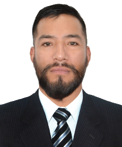

| Estudiante de Ingeniería de Sistemas | Apasionado por la tecnología
Soy una persona comprometida con mi desarrollo personal y profesional. Me apasionan las tecnologías, el análisis de datos y la sostenibilidad. Estoy estudiando ingeniería de sistemas y quiero aportar soluciones que mejoren la vida de las personas.
Diseño de póster informativo sobre la implementación de paneles solares en comunidades rurales, alineado con el ODS 7.
Trabajo estadístico descriptivo sobre la producción de gas natural en la región La Convención - Cusco, entre 2023 y 2024.